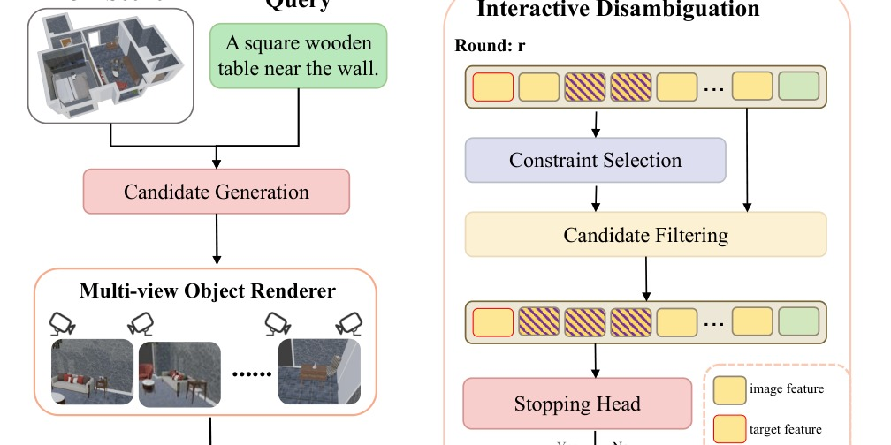
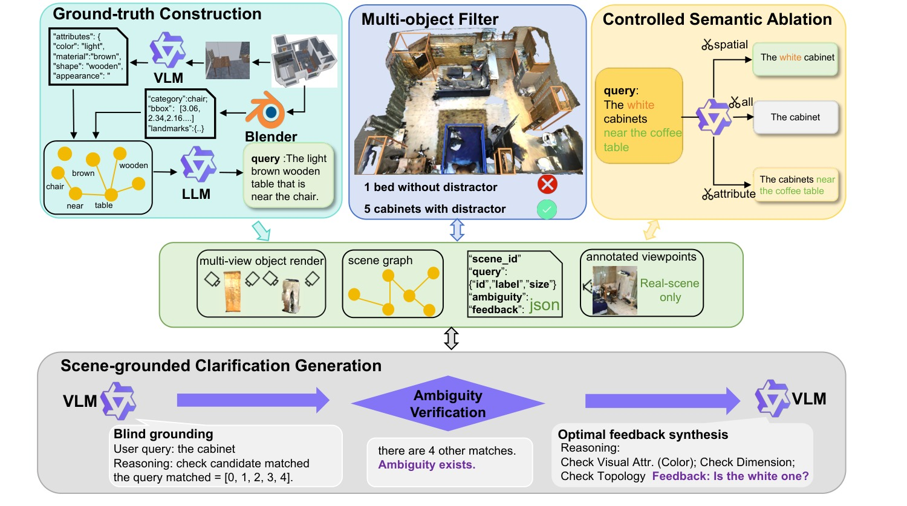
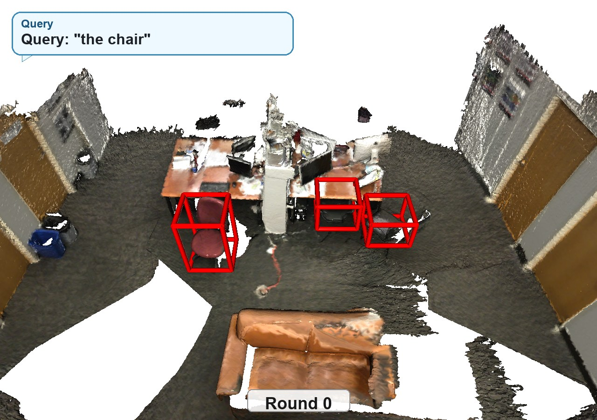
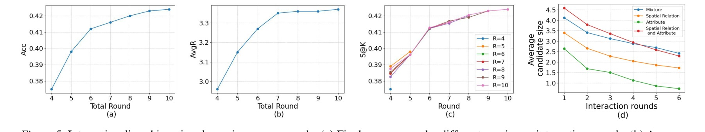

Interactive 3D visual grounding demo: an ambiguous query is refined through model-generated clarification and human feedback.
Abstract
AmbiRefer3D studies 3D visual grounding when a natural-language query may refer to multiple plausible objects. Instead of forcing a single prediction from an underspecified expression, the framework retrieves candidate objects, asks discriminative clarification questions, and filters candidates across interaction rounds until the target can be grounded.
The dataset supports this setting with ambiguity-aware annotations spanning indoor 3D scenes, multi-round question-answer supervision, and evaluation metrics that measure both grounding accuracy and the efficiency of disambiguation.
Method

Candidate generation
The first stage retrieves a candidate set that is semantically consistent with the ambiguous referring expression, preserving plausible targets instead of prematurely collapsing to one object.
Interactive disambiguation
The second stage selects clarifying constraints, asks questions about attributes or spatial relations, and filters the candidate set after each answer.
Stopping behavior
A stopping head decides whether the current candidate set is sufficiently resolved or another interaction round is needed.
Ambiguity-Aware Data

Attribute ambiguity
Queries omit visual properties such as color, material, shape, or appearance, leaving multiple objects compatible with the text.
Spatial ambiguity
Queries need relational context such as near, left of, or inside to distinguish a target from similar objects.
Composed ambiguity
Hard cases require both visual attributes and spatial relations, motivating multi-round clarification.
Interactive Demo Frames

Round 0
Initial ambiguous query
The query "the chair" maps to multiple candidates, so the system keeps several plausible objects active.
Evaluation Focus
Target survival
Measures whether the ground-truth target remains inside the retrieved candidate set before interaction begins.
Success@K
Measures whether the target can be identified within a limited number of clarification rounds.
Average rounds
Tracks interaction cost and exposes whether the model resolves ambiguity efficiently.

Resources
Citation
@inproceedings{zhu2026ambirefer3d,
title = {AmbiRefer3D: 3D Visual Grounding with Referential Ambiguity},
author = {Zhu, Rongjiang and Kang, Wei and Liu, Zeqi and Chen, Junyu and Yang, Shuo and Wu, Xinxiao},
booktitle = {Proceedings of the 43rd International Conference on Machine Learning},
year = {2026}
}